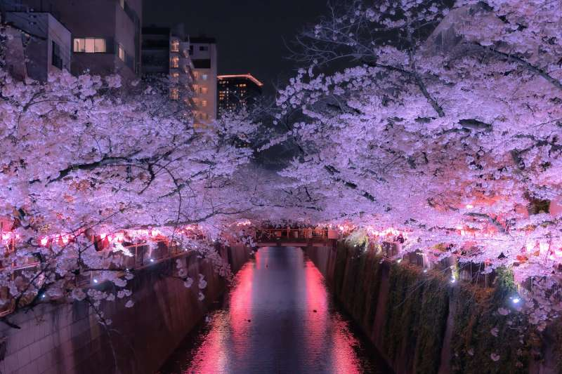
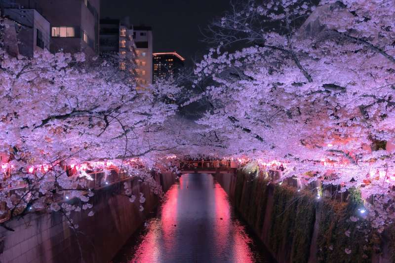
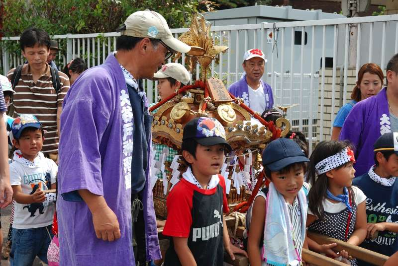
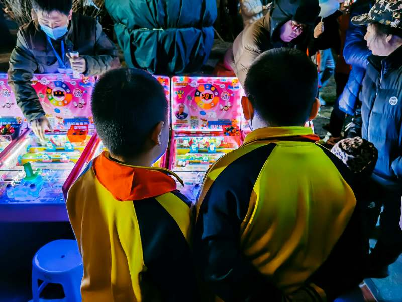
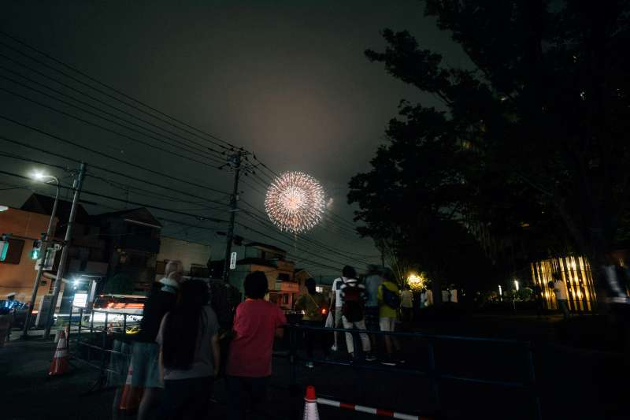
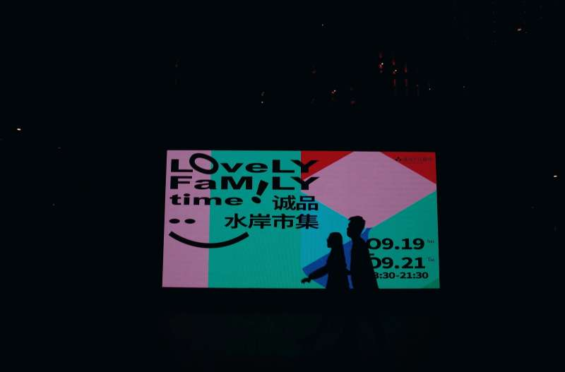
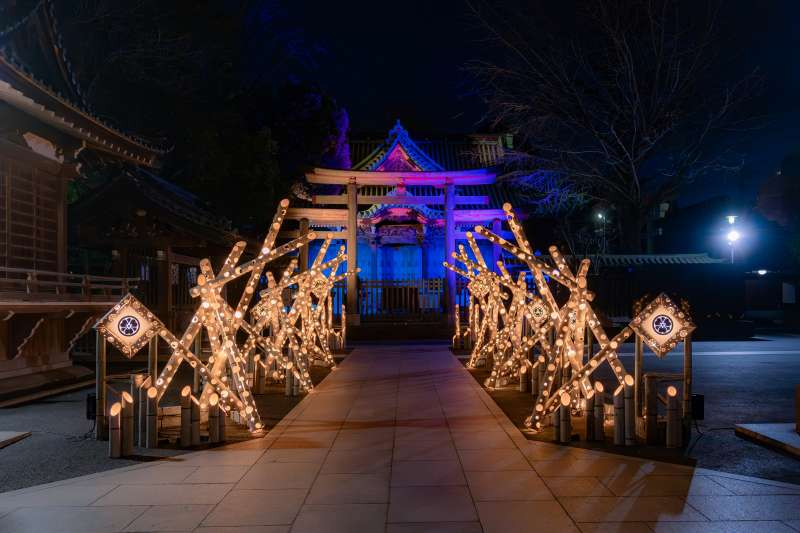

Cherry Blossom Festival
Every spring, locals and visitors gather in parks like Ueno and Shinjuku Gyoen to celebrate the blooming cherry blossoms with picnics and light shows.

Tokyo is a city that never sleeps – full of cultural traditions, futuristic experiences, and seasonal celebrations.
Throughout the year, the city offers a mix of festivals, exhibitions, and events that reflect both Japan’s history and its modern lifestyle
Every spring, locals and visitors gather in parks like Ueno and Shinjuku Gyoen to celebrate the blooming cherry blossoms with picnics and light shows.
One of Tokyo’s biggest Shinto festivals held in May at Asakusa Shrine, featuring parades, portable shrines (mikoshi), and traditional performances.
A major international gaming event in September showcasing the latest video games, VR technology, and esports competitions.
Held in July along the Sumida River, this iconic fireworks display lights up the summer sky with thousands of colorful explosions.
Japan’s biggest film event in October, presenting world cinema, anime films, and red-carpet events.
A spiritual and cultural celebration where visitors gather to ring the temple bell 108 times to welcome the new year.
